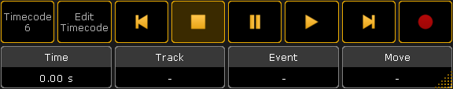
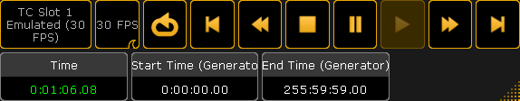

The timecode shows can be controlled using the Timecode Encoder Toolbar or by the command line.
When a timecode show is tapped in the timecode pool then the encoder toolbar changes to this:

Encoder Toolbar - Timecode Show
This can be used to control the playmode of the show. This is a short description of the buttons in the top row (left to right):
Show info button:
This button does not do anything when tapped. It displays the name and number of the timecode show.
Edit Timecode Show:
Tapping this button will open the timecode editor - please read the Edit a Timecode Show topic for details.
Jump to Start:
This will set the Time to 0 (zero).
Stop:
This button will stop the timecode show.
Pause:
This will pause the timecode show.
Play:
This will set the timecode show in play mode. If the source is external then it will wait for the timecode source to begin. If the source is an "Intern" source then it will start to run from the position of the Time marker.
Jump to End:
Tapping this will jump to the end of the timecode show.
Record:
Tapping this will set the timecode show in Record mode - read more about recording a timecode show in the Record a Timecode Show topic.
The four encoders has the following functions:
Time:
This is the Time marker. It displays the current time. If the source is "Intern" then the encoder can be used to set the current time.
Each timecode slot can generate a timecode signal for the session. This signal will not be output by the LTC or MIDI ports, but it will be distributed in a session.
Tapping a timecode slot in the pool will change the encoder toolbar to look like this:

Encoder Toolbar - Timecode Generator
In the top row there are a lot of buttons. This is a short description of then from left to right:
Slot Number Info:
This information button displays the timecode slot number and it writes Emulated and a frame per second if the generator is running.
Time format - swipe button:
This is used to set the generated frames per second (FPS). The options are: 24 FPS, 25 FPS, 30 FPS, and 1/100s.
Loop - toggle button:
When this is active then the generator will jump back to the Start Time (set be the center left encoder) when it reaches the End Time (set by the center right encoder).
Jump to Start- also in the title bar of the clock when displaying the timecode slot:
This will jump to the Start Time.
Rewind:
Holding this button will rewind the time.
Stop:
It stops the generator and sets the time to the Start Time.
Pause - also in the title bar of the clock when displaying the timecode slot:
This will pause the generator at the current time.
Play- also in the title bar of the clock when displaying the timecode slot:
Tapping this will start the timecode generator.
Fast forward:
Holding this button will fast forward the time.
Jump to End- also in the title bar of the clock when displaying the timecode slot:
This will make the generator jump to the End Time. If loop is active then it will jump back to the Start Time if the generator is running.
Three of the encoders can be used with the timecode generator. The left encoder does not do anything, but the label of the encoder displays the time for the slot. The next encoder can be used to set a Start Time for the generator. The third one can be used to set an End Time for the generator.
Using command line
The generator can also be controlled using commands.
To play or generate timecode slot 1 use the Go command:
[Channel]> Go TimecodeSlot 1
Use Off to stop the generator. Pause will pause the generator.